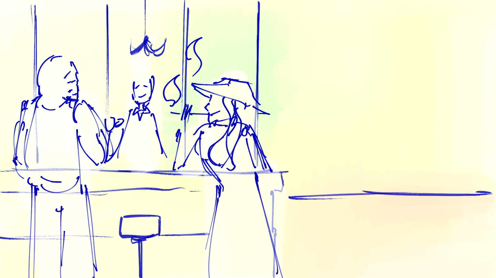
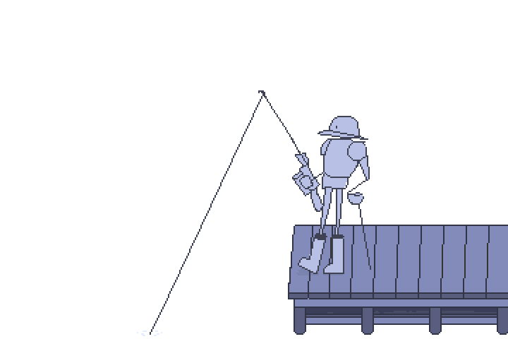
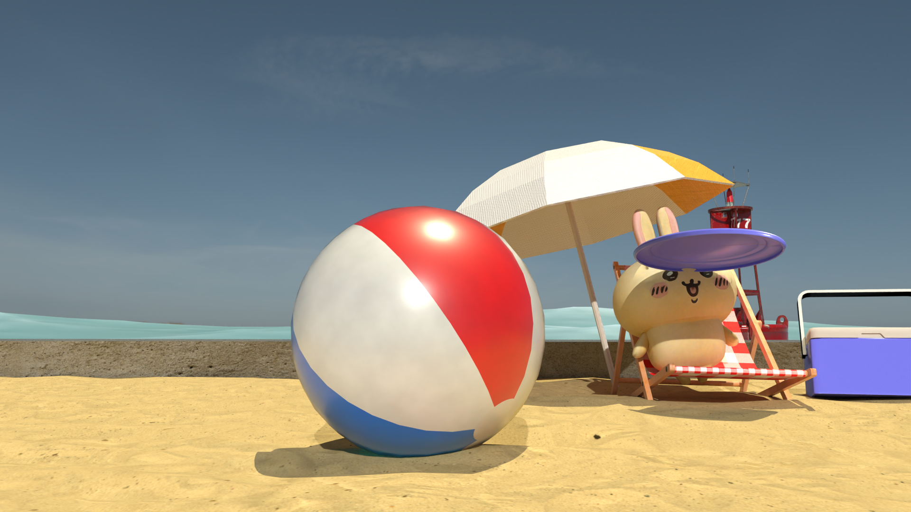
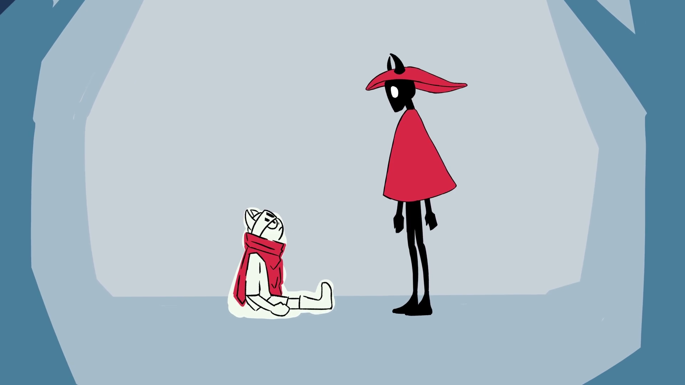

shapeless
animated clip
2025
welcome to my website

animated clip
2025
chikawa blender animation
2025
"Lupa" by Capicua - animated music video
2025im mango, a multidisciplinary designer with a bachelor's degree in Design and Multimedia from the University of Coimbra, i like doing illustration, animation and creative coding.
you can find me on github and on my social media profiles.
you can also reach me out at mango@mail.com